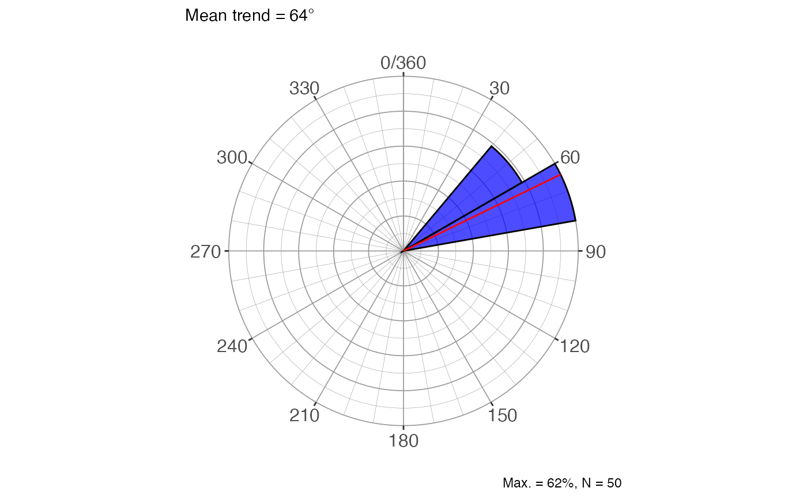
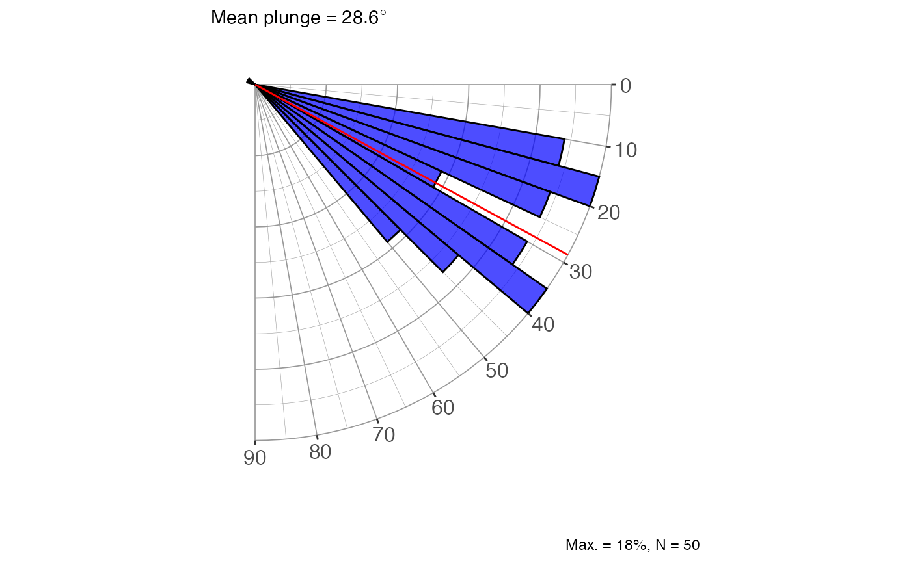
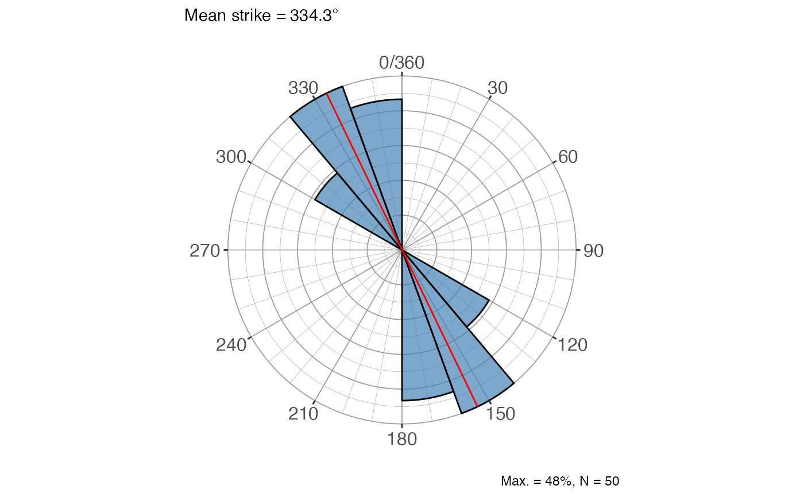
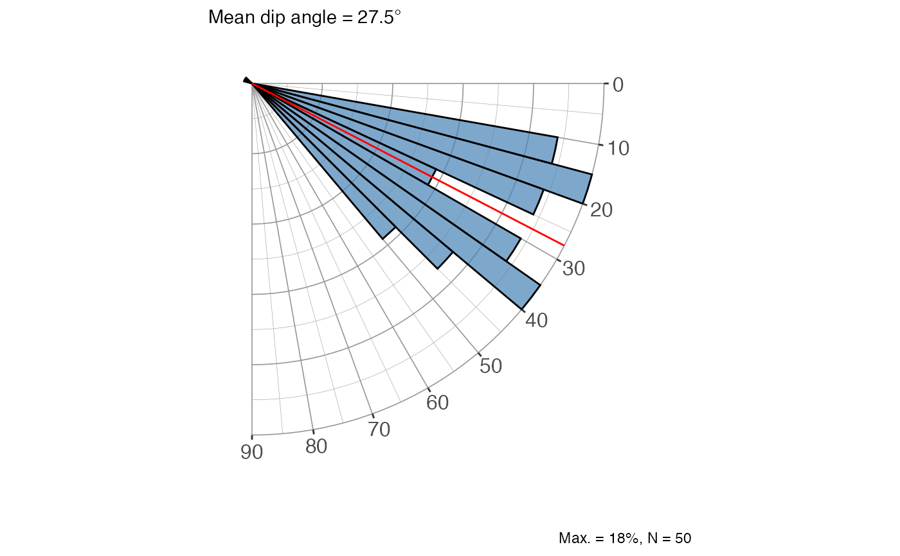
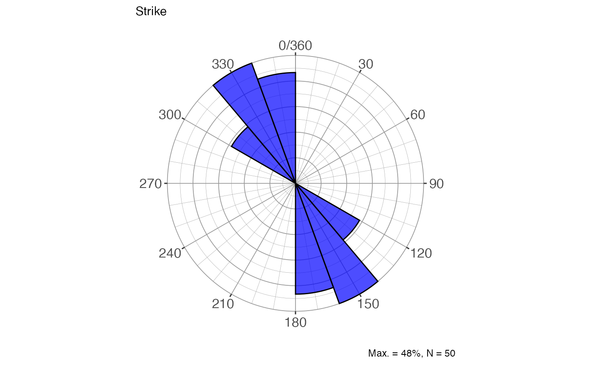
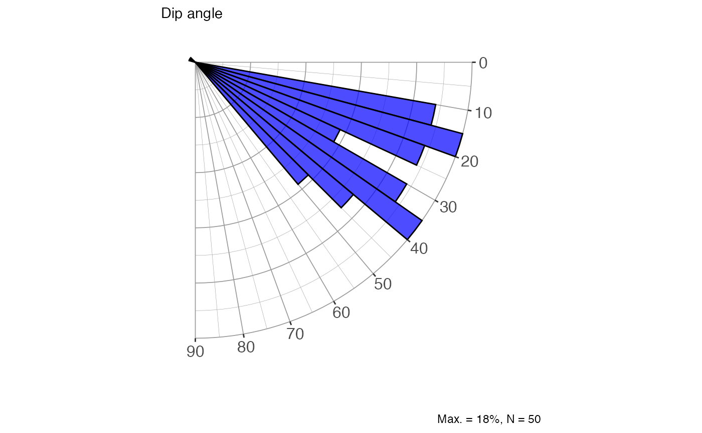
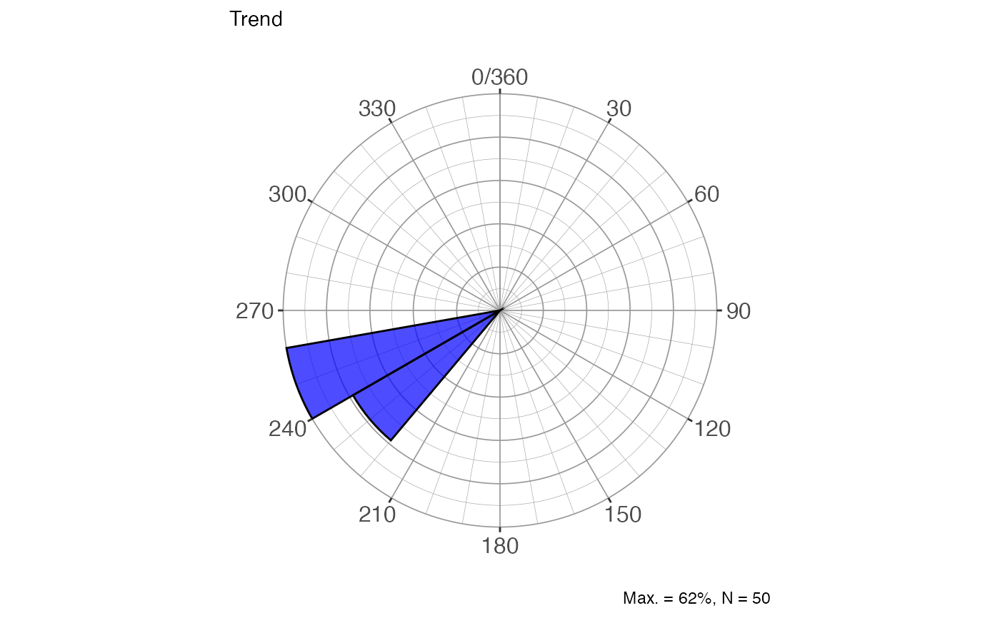
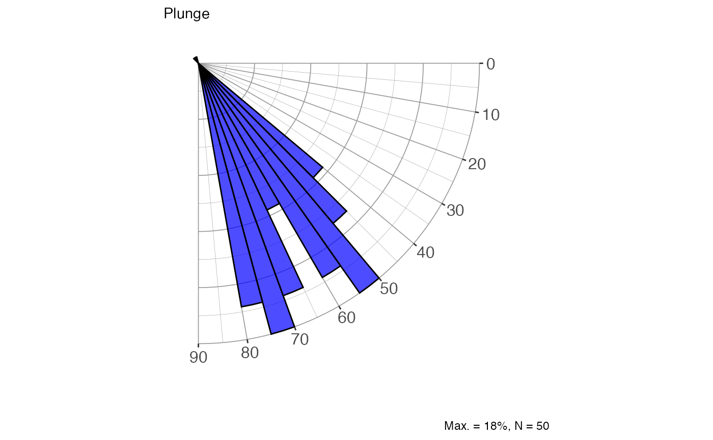

Draws a set of rose diagrams for a sample of 3-D orientations (lines or
planes) using ggplot2. Petal lengths are scaled to the square root of
frequency so that petal area is proportional to count. Depending on the
show argument, up to five diagrams are returned: strike (bimodal, 0°–360°
mirrored), dip direction (0°–360°), dip angle (0°–90°), trend (0°–360°),
and plunge (0°–90°). Optionally overlays the mean orientation; the dominant eigenvector (V1 for clustered data, V3 for
girdle distributions) is used as the mean.
Usage
rose_diag_spher(
trd,
plg,
data = NULL,
conf.level = 0.95,
width1 = 20,
width2 = 5,
alpha = 0.7,
fill.col = "blue",
mean.col = "red",
type = c("line", "dir", "strike"),
show = "all",
show.mean = T
)Arguments
- trd
Numeric vector of trend / dip-direction / strike values in degrees, or an unquoted column name when
datais supplied.- plg
Numeric vector of plunge / dip values in degrees, or an unquoted column name when
datais supplied.- data
A data frame (or tibble) containing the columns referenced by
trdandplg. DefaultNULL(use vectors directly).- conf.level
Numeric. Confidence level for mean direction statistics shown in the subtitles. Default
0.95.- width1
Numeric. Bin width in degrees for the azimuthal diagrams (strike, dip direction, trend). Default
20.- width2
Numeric. Bin width in degrees for the inclination diagrams (dip angle, plunge). Default
5.- alpha
Numeric. Transparency of the petal fill (0 = fully transparent, 1 = fully opaque). Default
0.7.- fill.col
Character. Fill colour of the petals. Default
"blue".- mean.col
Character. Colour of the mean-direction line(s). Default
"red".- type
Character. How to interpret the input orientations:
"line"(default) Trend and plunge of a lineation.
"dir"Dip direction and dip angle of a plane (converted internally to the pole before computing the mean).
"strike"Strike (right-hand rule) and dip angle of a plane (converted internally to the pole before computing the mean).
- show
Character vector selecting which diagrams to return. Use
"all"(default) for all five, or any subset ofc("strike", "dir", "dip", "trend", "plunge").- show.mean
Logical. If
TRUE(default) a radial line is drawn at the mean orientation and the mean value is shown in the subtitle of each diagram; ifFALSEneither is added. When the distribution is random (R index dominant) the mean line is suppressed regardless.
Value
A named list of ggplot objects. Names correspond to the selected
diagrams: "strike", "dir" (dip direction), "dip" (dip angle),
"trend", and/or "plunge". Each plot caption reports the maximum bin
percentage and the sample size N.
See also
Other directional statistics:
dir_aov_spher_ax(),
dir_aov_spher_vec(),
dir_stats_circ(),
dir_stats_spher(),
rose_diag_circ()
Examples
# Lines supplied as plain vectors — all five diagrams
set.seed(42)
trds <- runif(50, 40, 80)
plgs <- runif(50, 10, 50)
plots <- rose_diag_spher(trds, plgs)
plots$trend

plots$plunge

# Planes as dip direction / dip, only strike and dip-angle diagrams
rose_diag_spher(trds, plgs, type = "dir",
show = c("strike", "dip"), fill.col = "steelblue")
#> $strike

#>
#> $dip

#>
# From a data frame, no mean line
df <- data.frame(dip_direction = trds, dip = plgs)
rose_diag_spher(dip_direction, dip, data = df,
type = "dir", show.mean = FALSE)
#> $strike

#>
#> $dir
#>
#> $dip

#>
#> $trend

#>
#> $plunge

#>